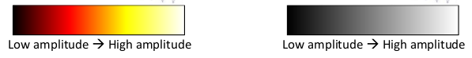
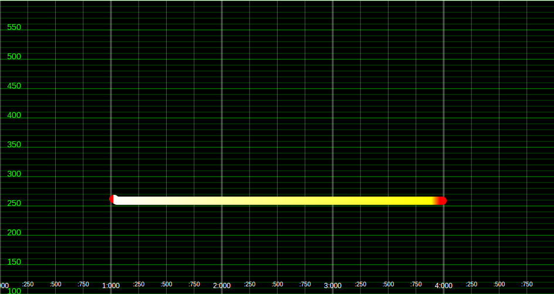
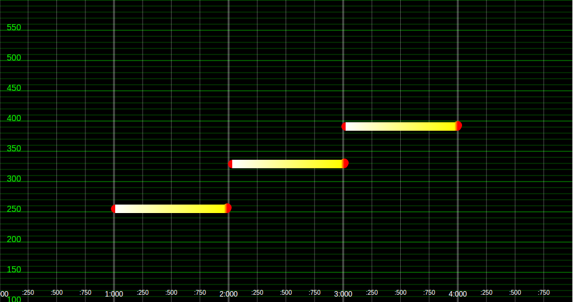
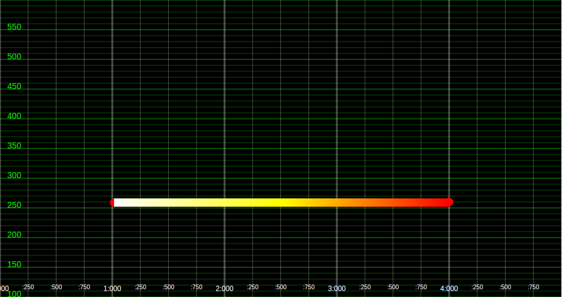
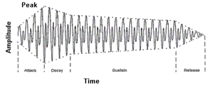
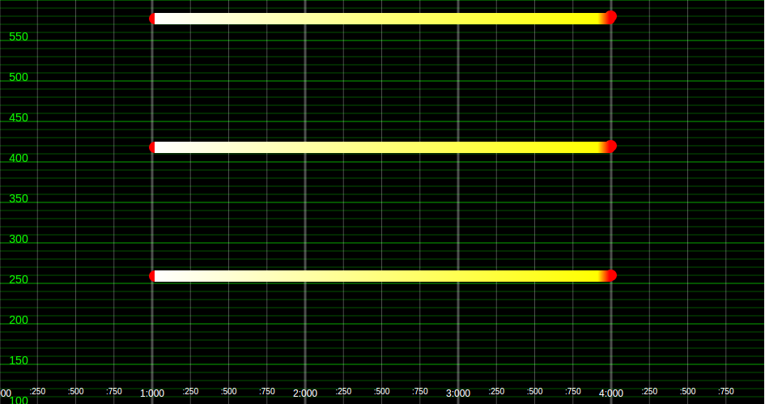

Spectrogram Canvas User Study
Instructions:
Backgound information on spectrograms
A spectrogram is a visual representation of a sound that is often used by engineers and researchers to analyse animal sounds or timbres of instruments.

Axes of a spectrogram
A spectrogram represents a given sound in 3 dimensions:
- Horizontal axis: time
- Vertical axis: frequency
- Intensity of colour: amplitude of a particular frequency at a particular time
Amplitude/Intensity
The intensity of colour can be represented by a colour map, or by the opacity of the colour:
| A single sine wave played at the frequency of 262Hz (note C4) for 1s at constant amplitude would look like the following on a spectrogram: |  |
| The same sine wave played at increasing frequencies C4: 262Hz, E4: 330Hz, G4: 392Hz, would look like the following on a spectrogram |  |
| A single sine wave played at a constant frequency of 262Hz (note C4) for 1s with decreasing amplitide would look like the following on a spectrogram: |  |
Timbre/Character of sound
While frequency and amplitude is often used to describe a pure sound wave, a music’s character is often shaped by how these attributes change over time, or how these sine waves are played on top of each other.
These are usually dependent on the following features of a spectrogram:
-
ADSR Envelopes.
When a musical instrument is played, its amplitude is often not static. Instead, the loudness of the sound would build up and decay over time as a single note is played. This is referred to as an envelope and varies different from instrument to instrument, giving different instruments its specific character. An envelope can also be represented by graphically on an amplitude-time graph:
This is represented like so on the spectrogram.
-
Harmonic Envelopes.
Compared to a single sine tone, instruments tend to sound richer due to the presence of harmonics. On the spectrogram, these show up as extra frequency bands that are multiples above the base frequency:Spectrogram and sound signal of a sine tone: Spectrogram and sound signal of an instrument with 3 harmonics. 